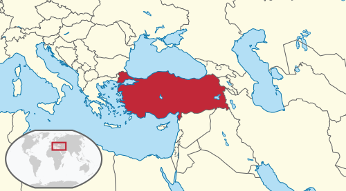
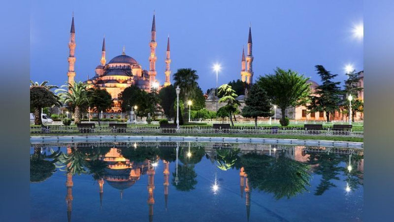
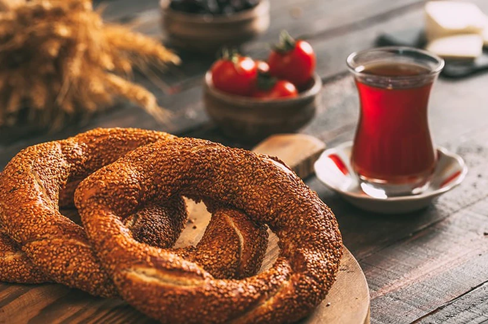
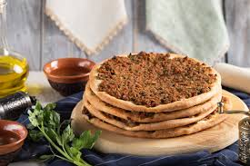
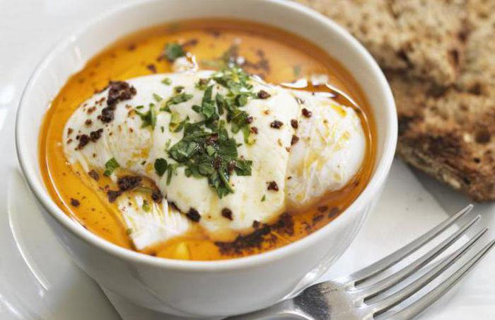
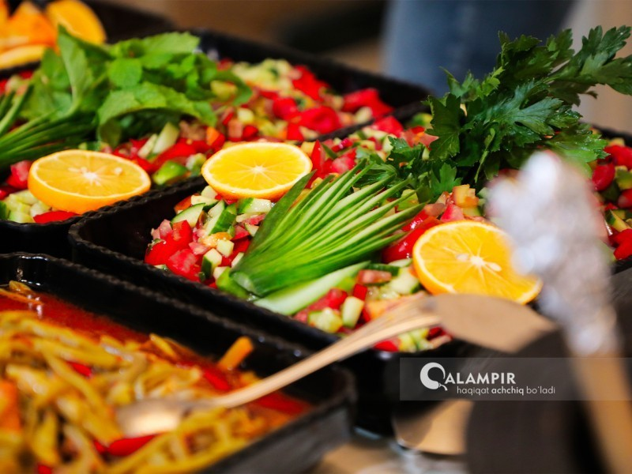

Turkiya (turkcha: Türkiye), rasman - Turkiya Respublikasi (turkcha: Türkiye Cumhuriyeti) - G`arbiy Osiyo 97% ini tashkil etadi va Janubiy Yevropa 3%ini tashkil etadigan davlat. Turkiya ham Osiyo, ham Yevropa qit`asiga kiradi. Asoschisi Mustafo Kamol Otaturkdir. Turkiyaning poytaxti - Anqara shahri. Davlat tili - Turk tili. Maydoni - 783,562 km². Aholi soni 2024-yil hisobiga ko`ra - 86,099,039 kishi. Turkiya pul birligi - lira. Turkiya Respublikasi 81 ta viloyatlardan iborat. Turkiya 14 ta davlat bilan chegaradosh.
| № | Shaharlar | Binolari |
|---|---|---|
| 1 | Istanbul | Ayasofiya |
| 2 | Anqara | Anqara qal'asi |
| 3 | Izmir | Soat minorasi (Saat Kulesi) |
| 4 | Antaliya | Hadrian darvozasi |
| 5 | Konya | Mavlono muzeyi |


Turk oshxonasining asosiy taomlari va shirinliklari: Kaboblar: Turk oshxonasining yuragi bo'lib, eng mashhurlari orasida döner (vertikal grillda pishiriladigan go'sht), iskender kabob, adan kabob va shish kabob mavjud. Lahmajun: Yupqa xamir ustiga qiyma, sabzavotlar va ziravorlar solib pishiriladigan "turk pitssasi". Kokorech: Qo'y yoki qo'zichoq ichaklaridan tayyorlanadigan, ziravorlar bilan olovda qovurilgan mashhur ko'cha taomi. Pahlava (Baklava): Yong'oq yoki pista bilan to'ldirilgan, shakarli sharbatga botirilgan qatlama shirinlik. Simit: Kunjutli turk kulchasi, odatda choy bilan ertalab iste'mol qilinadi. Ayron: Yogurt, suv va tuzdan tayyorlanadigan, ayniqsa go'shtli taomlar bilan ichiladigan tetiklantiruvchi ichimlik.




Milliy kiyimlari
Ayollar kiyimlari nafis kashtalar va qimmatbaho matolardan (ipak, baxmal) tikilishi bilan mashhur. Entari: Erkin bichimdagi uzun ko`ylak bo`lib, odatda şalvar ustidan kiyiladi. Şalvar: To`piqqacha tushadigan keng va qulay shimlar. Bindall1: To`y va maxsus marosimlarda kiyiladigan, oltin yoki kumush iplar bilan bezatilgan baxmal ko`ylak. Başörtüsü: Turli rang va naqshlardagi ro`mol yoki bosh kiyim, ko`pincha tangalar va munchoqlar bilan bezatiladi. Ferace: Ayollarning ko`chaga chiqqanda kiyadigan uzun, keng ustki kiyimi. Erkaklar milliy liboslari Erkaklar kiyimlari amaliy va harakatlanish uchun qulay qilib ishlangan. Şalvar: Ayollarnikiga o`xshash, lekin ko`proq to`q rangli va qalinroq matodan tikilgan keng shimlar. Gömlek: Oldi ochiq yoki tugmali keng ko`ylak. Yelek: Boy bezatilgan va kashtali jilet (nimcha). Kuşak: Belga o`raladigan keng va uzun mato belbog`. Fes: Usmonli davrining ramzi hisoblangan, to`q qizil rangli bosh kiyim (hozirda asosan folklor tadbirlarida kiyiladi)